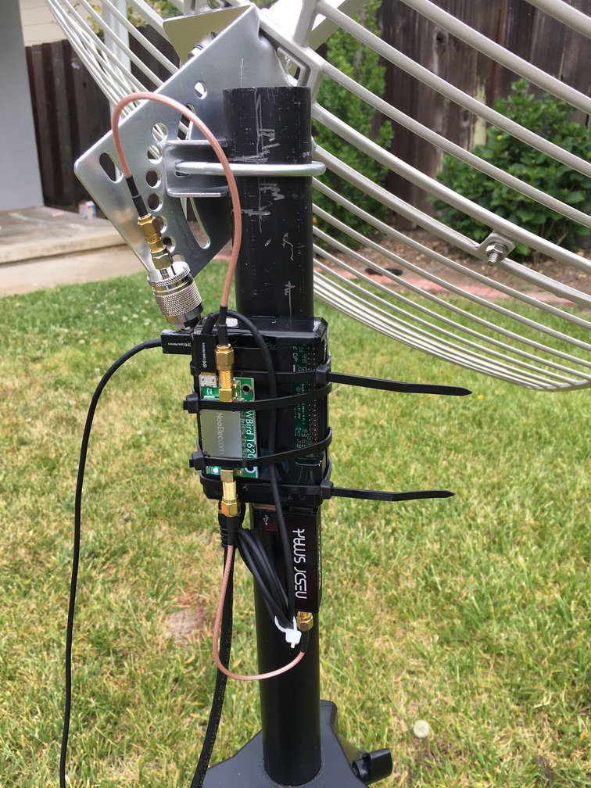
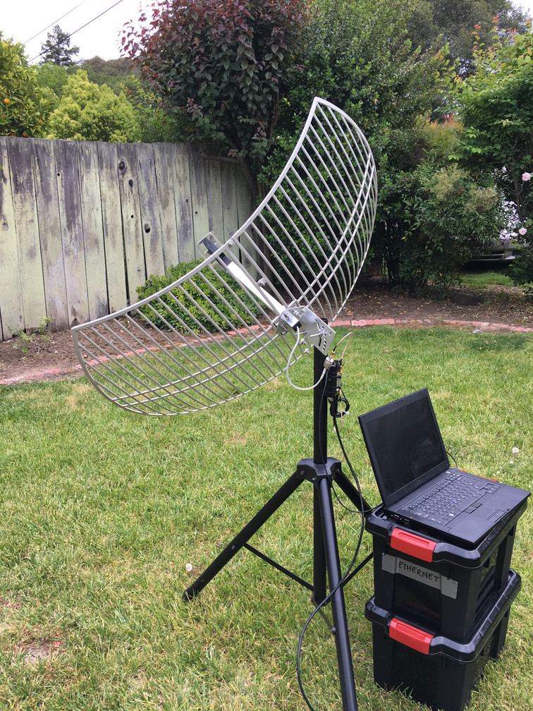

A minimal LRIT/HRIT receiver¶
Receiving the LRIT and/or HRIT signal can be done with relatively inexpensive equipment. This guide describes a minimal configuration that I have confirmed to work at my location.
Warning
Whether or not this configuration works at your location depends on a large number of factors, such as satellite elevation, local interference, etc. Try it at your own risk.
The bill of materials is as follows:
Raspberry Pi 2 (v1.1+) or higher
Available at Newark; $35 (Raspberry Pi 3 Model B+)
RTL-SDR with R820T2 tuner
Available at NooElec; $24 (NooElec NESDR SMArt)
NooElec SAWBird (or SAWBird+) with bias tee (LNA and filter board)
Available at NooElec; ~$25 (or $35 for the SAWBird+)
1.9 GHz Parabolic Grid Antenna
Available at Excel-Wireless (or Amazon); ~$100
Adapter from male Type N to male SMA (for antenna to LNA)
Available at Amazon and elsewhere; $7
Jumper from male SMA to male SMA (for LNA to RTL-SDR)
Available at NooElec; $8
This sums up to about $200 excluding tax/shipping.
Instead of the listed RTL-SDR, you can also opt to buy the NESDR SMArTee ($26) which has an always-on bias tee for powering the SAWBird SAWBird LNA. Without an integrated bias tee you’ll have to supply power to the SAWBird yourself with a micro-USB cable (see pictures below).
Another option is to buy the NESDR SMArTee XTR ($38) which is the same as the above SDR, but has an extended frequence range that may be better able to tune into the 1694 Mhz signal (which is fairly close to the 1750 Mhz limit in some SDRs)
Note
Additional items such as power supplies or mounting hardware are not listed here.
Important
A similar grid dish antenna works for me at my location (San Francisco Bay Area; the exact antenna is no longer available). I can receive GOES-15 at its west location (135 degrees west), GOES-16 at its east location (75 degrees west), and GOES-17 at its checkout location (89 degrees west). GOES-16 is furthest away and at 25 degrees elevation at my location.
If your location has the satellite you’re interested in at a lower elevation than 25 degrees, you may need a bigger dish. However, even with any satellite at a higher elevation, there are other factors that can impact whether or not you can use the dish mentioned here (blocked line of sight, local interference, etc).
Find your local azimuth and elevation on Satview (GOES-15, GOES-16, GOES-17).
Hardware¶
The setup to test this configuration looked like this.
 {kind=link}
{kind=link}
The grid dish antenna has a female Type N connector. To connect it to the SAWBird you need a male Type N to male SMA adapter (in the picture you see the adapter and an male SMA to male SMA jumper).
The NooElec SAWBird is connected to the grid dish antenna on the input and the RTL-SDR on the output. It is powered by the Pi over USB (the bias tee version of the SAWBird has a micro-USB connector).
The RTL-SDR is connected to the SAWBird using a male SMA to male SMA jumper cable.
In this setup, the Pi gets its power over USB.
In this setup, the Pi is connected to the network over Ethernet.
The laptop in the right image was only used to SSH into the Raspberry Pi.
Note
While the Raspberry Pi 2 v1.1 is adequate for HRIT demodulation and decoding, it doesn’t leave much margin on the processing power. In a screenshot below you can see the demodulator use 96% of a single CPU core.
The RTL-SDR can be configured to use a low enough sample rate to still work with the Pi 2. If you want to use an Airspy Mini instead (which has a minimum sample rate of 3M samples/sec), you’ll have to use a Raspberry Pi 2 v1.2 or the Raspberry Pi 3.
Software¶
Raspbian works fine. There is no need for a desktop environment if you only use the Pi for signal demodulation and decode, so you can use the lite version. For instructions on building and installing goestools, see Installation.
After installing goesrecv, copying and modifying its
configuration file, you can run it with -v -i 1 to get
second-by-second demodulator statistics.
You can use the Viterbi error rate for pointing your dish.
A rate of ~2000 means there is no signal.
A rate of ~1000 may give you sporadic packets.
A rate of ~400 can give you the complete stream of packets without any
drops, but is very sensitive to interference.
A rate of ~100 or lower is good and can give you a packet stream
without drops for hours on end.
The lower the Viterbi error rate, the better your signal.
The output of goesrecv during operation of the test setup:

The output of htop during signal lock:
To process the packet stream, see goeslrit and goesproc.
For example, this is the false color full disk received from GOES-16 and assembled by goesproc during this test (resized to 1024x1024 for size constraints):

This is a crop of Northern America to get an impression of the resolution of these full disk images:

Notes¶
For enclosures, check out Bud Industries and Hammond Manufacturing.
The power consumption of this setup is about 6 watts.
Other ARM based single board computers should work fine as well as long as they have comparable (or better) performance to the Raspberry Pi 2.
Empirical evidence shows that adding another LNA after the NooElec SAWbird improves signal quality (e.g. going from Viterbi error rate ~150 to ~100).
This post by @usa_satcom showing the grid antenna is capable of receiving LRIT.